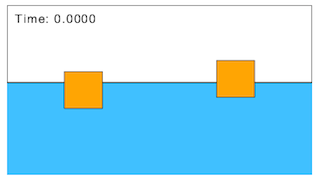

This simulation shows two blocks floating in water. One block is at equilibrium while the other is displaced and oscillates in the water. Students are asked to determine the condition for equilibrium, the net force, the period of oscillation, and the mass of the two blocks.